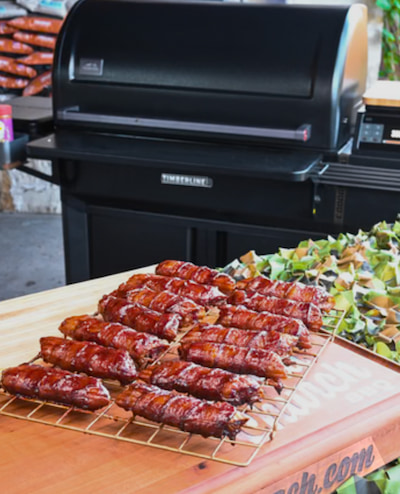
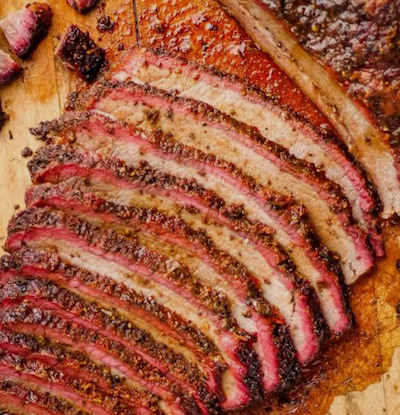
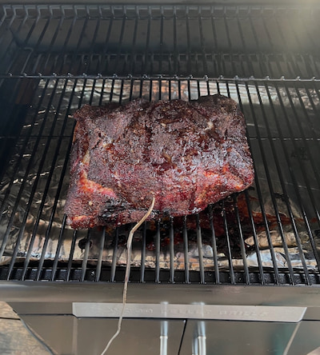
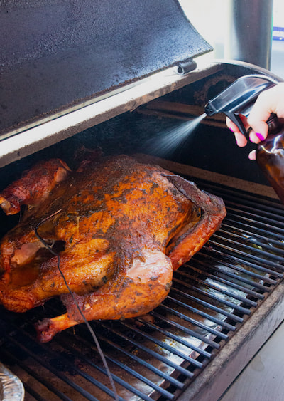

Smoked Shotgun Shells
A family favorite appetizer with all the flavor.
Neal's Note: While this is an appetizer, it is often a main course. And I must say, it is great as leftovers.
View Full RecipeThese pellet smoker recipes are designed to help beginners learn basic smoking temperatures, internal temperatures, and simple methods for great barbecue.

A family favorite appetizer with all the flavor.
Neal's Note: While this is an appetizer, it is often a main course. And I must say, it is great as leftovers.
View Full Recipe
Super easy and full of flavor
Neal's Note: I recommend subbing in Holy Voodoo in place of Holy Gospel and plan on using 2 TBSP in its place. Trust me. It's worth it!
View Full Recipe
I like big pork butts and I cannot lie!
Neal's Note: I like to spritz with an apple juice / apple cider vinegar every 30 minutes after the pork reaches 120 degrees.
View Full Recipe
It's time for Thanksgiving.
Neal's Note: I normally brine my turkey in a mix of chicken broth or vegetable broth with a poultry seasoning blend, garlic salt, and water.
View Full Recipe